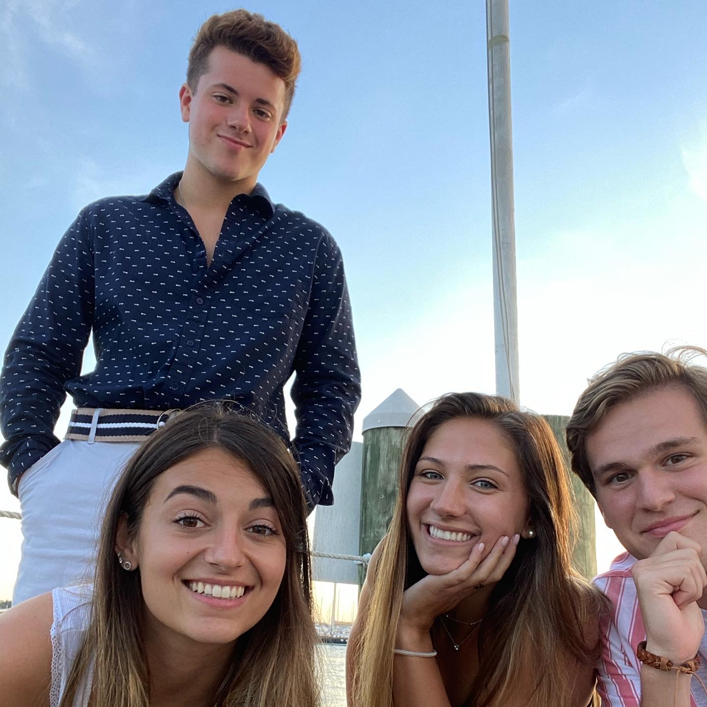

About Mark Bowen
Hi, I'm Mark Bowen and I am in the Class of 2024 at the University of Rhode Island. I am a Computer Science B.S. and Data Science B.S. major.
I am from Collegeville, Pennsylvania (about 30 minutes outside of Philadelphia). One of my favorite pastimes is spending time with my friends doing
almost anything.  In the summer I like to spend time at the beach whenever possible.
 I love dogs, especially my yellow lab Max.
I am a diehard Patriots fan and love all sports Boston related.
I love dogs, especially my yellow lab Max.
I am a diehard Patriots fan and love all sports Boston related.